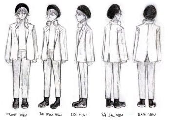
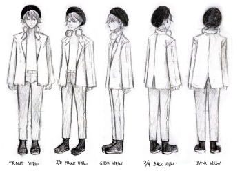

Evita's Art Space
EXPLORE

EXPLORE
A collection of old artworks I still love up to this day.


 

A collection of books that got me started with arts

This book talks about why design systems are important even when expressing creativity. It also talks about the importance of focusing on an individual's identity in order to create designs that are not rigid. This book is good for designers who want to get away from static branding.
A classic book form the 60s that is still loved by today. It tells that art is a blend of philosophy, theory, and personal reflection. Munari talks about how art should be beautiful, functional, and accessible to all people.

This book is great for those who wants to practive. It argues that true art, design, and creativity comes from making. The author believed that creating directly through hands and not just the time is the best approach to learning how to create good designs.